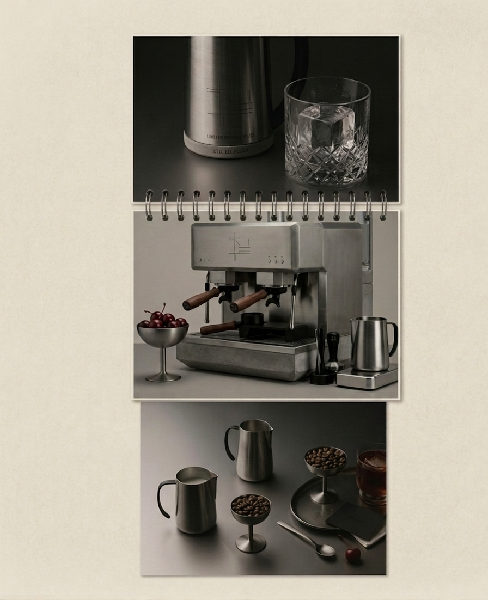

NERV / THE MANIFESTO
01 / THE ORIGIN
Born from the Grind. NERV was conceived in the quiet hours of deep work—between lines of code and the need for absolute mental clarity. We found that most coffee was either too decorative or too burnt to serve a real purpose. We created NERV to provide a sensory environment that mirrors the work we do: structured, intentional, and void of unnecessary noise.

02 / THE PHILOSOPHY
We believe that coffee should be a tool for focus, not a distraction. Our blends are crafted to enhance mental clarity and sustain energy without the crash. We source our beans from ethical farms and roast them to perfection, ensuring that every cup delivers a pure, unadulterated experience.